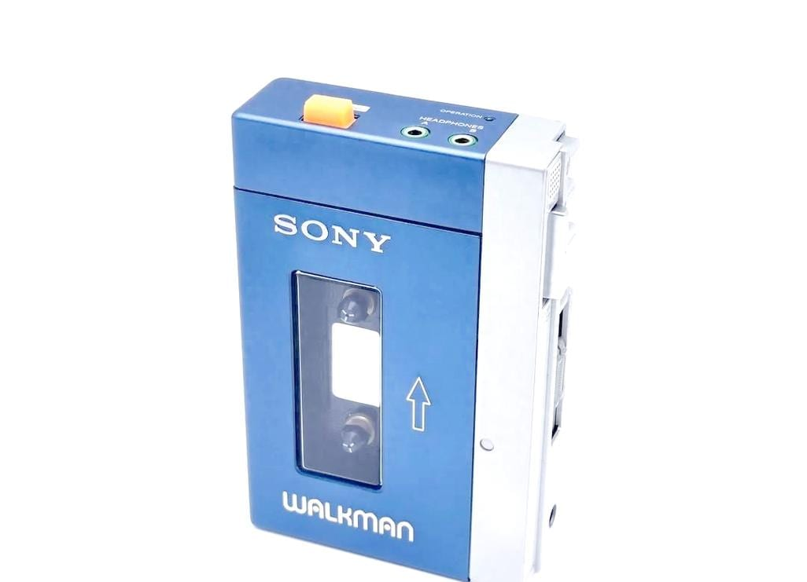

索尼 Walkman TPS-L2

1979 年 7 月上市的初代 Walkman TPS-L2，把立体声磁带播放机塞进蓝银色小盒，配一对轻型耳机，只做播放不做录音。它开启了「随时随地听自己的音乐」的私人听音时代，Walkman 一词从此成为便携音响的代名词。
客观评测
索尼 TPS-L2 于 1979 年 7 月 1 日在日本上市，是第一款便携立体声磁带播放机，仅支持播放、不支持录音，随机附 MDR-3L2 轻型耳机，提供两个耳机插孔与 HOT LINE 对讲按键（内置麦克风），2 节 AA 电池供电，约 390 克。首发 33,000 日元，北美以「Soundabout」之名销售，被广泛视为私人便携音乐时代的开端。
主观点评
TPS-L2 是「一个人的音乐世界」的原点。按下机械播放键，磁带转动的轻微马达声与耳中响起的立体声，是 1979 年最奢侈的私人时刻。HOT LINE 按键的设计尤其动人：想跟同伴说话，按下去音乐自动变小——那是没有降噪耳机的年代独有的浪漫。今天收藏 TPS-L2 难在皮带与电机保养，成色好、附件齐的机器在拍卖市场上一路走高。它不只是一台随身听，更是整个便携音乐产业的创世纪。
优点与不足
- 开创私人便携听音时代，「随身听」概念影响延续至今
- 双耳机孔与 HOT LINE 对讲键，充满时代巧思
- 蓝银配色与机械按键质感极佳，工业设计辨识度高
- 只放不录，且无自动翻面，单面听完需手动换向
- 走带无防震，走动时容易跳音
- 年代久远，皮带老化、电机不转是常见通病
参数规格
| 上市时间 | 1979 年 7 月 1 日（日本） |
|---|---|
| 产品类型 | 便携式立体声磁带播放机（只放不录） |
| 磁带格式 | 紧凑盒式磁带（Compact Cassette），立体声 |
| 音频规格 | 立体声放音，附音量调节 |
| 耳机 | 随机 MDR-3L2 轻型立体声耳机 |
| 耳机输出 | 两个耳机插孔，可两人同时收听 |
| 对讲功能 | HOT LINE 按键，按下可借助内置麦克风与同伴说话 |
| 麦克风 | 内置驻极体麦克风 |
| 电机 | 直流马达驱动，机械走带 |
| 电源 | 2 节 5 号（AA）电池（3V） |
| 续航 | 约 8 小时连续播放（各资料略有出入） |
| 外接电源 | 支持外接直流电源 |
| 机身配色 | 蓝银双色金属感涂装 |
| 材质 | 金属与工程塑料混合机身 |
| 尺寸 | 约 13.3×8.8×2.9 厘米 |
| 重量 | 约 390 克（含电池） |